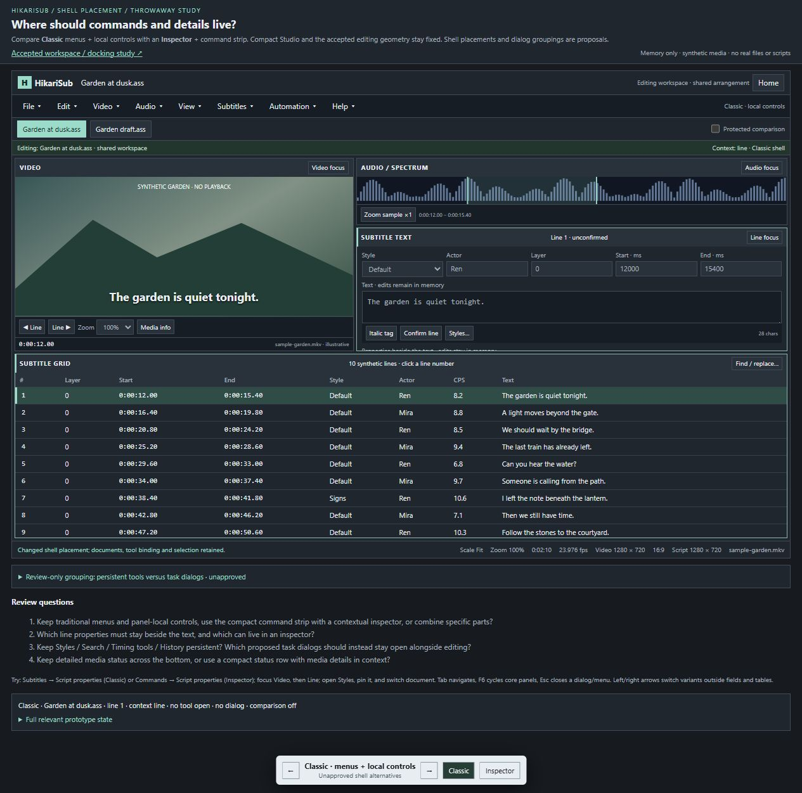

Next review · Shell controls · HTML
Menus and controls around the familiar layout
Compare Classic menus and panel-local properties with a contextual inspector and compact command strip. Both keep video left, audio/editor right, and the grid below.
Choose command/property/status placement and react to the proposed persistent tools versus task dialogs. These details remain open.
Menus, sample dialogs, focus and context switches work in memory. This does not settle every surface workflow or native docking.